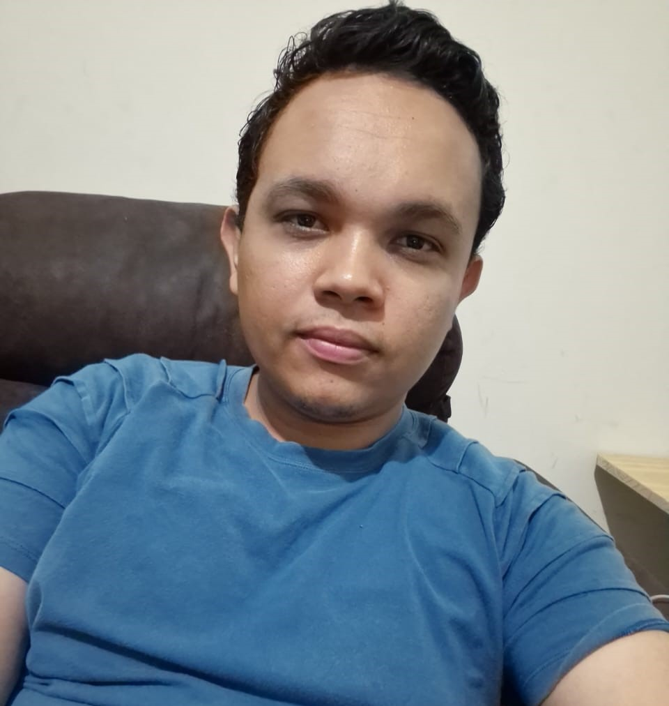

Lucas Rodrigues de Lima | WDD 130
Hello! My name is Lucas Lima and I am from Tupa, SP Brasil. I like to spend time with my family and enjoy moments with them. I'm studying at BYU Idaho and I am excited to acquire new knowledge. I started to have an introduction to software development during my high school, at the time I took a course along with high school and learned programming logic, some database concepts, delphi and web language. Today all this knowledge is helping me a lot in BYU studies and has been easier to understand because I had seen a little about the subject before. I am very interested in being able to learn more and more and also to one day be able to work as a developer.